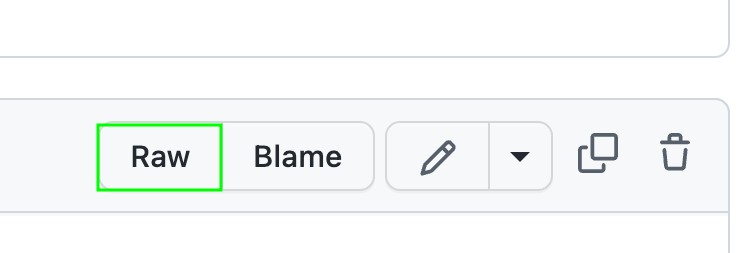

4.5. Create a DataFrame#
This section shows some tips to read or create a DataFrame.
4.5.1. Fix Unnamed:0 When Reading a CSV in pandas#
Sometimes, when reading a CSV in pandas, you will get an Unnamed:0 column.
import pandas as pd
df = pd.read_csv('data2.csv')
print(df)
Unnamed: 0 a b
0 0 1 4
1 1 2 5
2 2 3 6
To fix this, add index_col=0 to pandas.read_csv.
df = pd.read_csv('data2.csv', index_col=0)
print(df)
a b
0 1 4
1 2 5
2 3 6
4.5.2. Read Data from a Website#
pandas allows you to read data from a website without downloading the data.
For example, to read a CSV from GitHub, click Raw then copy the link.

import pandas as pd
df = pd.read_csv("https://raw.githubusercontent.com/mwaskom/seaborn-data/master/exercise.csv", index_col=0)
df.head(5)
| id | diet | pulse | time | kind | |
|---|---|---|---|---|---|
| 0 | 1 | low fat | 85 | 1 min | rest |
| 1 | 1 | low fat | 85 | 15 min | rest |
| 2 | 1 | low fat | 88 | 30 min | rest |
| 3 | 2 | low fat | 90 | 1 min | rest |
| 4 | 2 | low fat | 92 | 15 min | rest |
4.5.3. Divide a Large pandas DataFrame into Chunks#
As a data professional, you might work with large datasets that don’t fit in the memory.
When dealing with these datasets, you can divide the data into smaller portions using the pandas’s chunksize parameter.
In the code below, using no chunksize takes an average of 2.33s to run. Using chunksize=100000 takes an average of 424 µs to run, which is 563k times faster.
import pandas as pd
import warnings
warnings.filterwarnings("ignore")
%%timeit
pd.read_csv('../data/flight_data_2018_to_2022.csv')
2.33 s ± 58.3 ms per loop (mean ± std. dev. of 7 runs, 1 loop each)
df = pd.read_csv('../data/flight_data_2018_to_2022.csv')
df.shape
(563737, 120)
%%timeit
pd.read_csv('../data/flight_data_2018_to_2022.csv', chunksize=100000)
424 µs ± 30.9 µs per loop (mean ± std. dev. of 7 runs, 1000 loops each)
We can see that using chunksize=100000 divides the DataFrame into 6 portions, 5 of which have 100000 rows.
df_chunks = pd.read_csv('../data/flight_data_2018_to_2022.csv', chunksize=100000)
for df_ in df_chunks:
print(df_.shape)
(100000, 120)
(100000, 120)
(100000, 120)
(100000, 120)
(100000, 120)
(63737, 120)
4.5.4. Read HTML Tables Using Pandas#
If you want to quickly extract a table on a website and turn it into a Pandas DataFrame, use pd.read_html. In the code below, I extracted the table from a Wikipedia page in one line of code.
import pandas as pd
df = pd.read_html('https://en.wikipedia.org/wiki/Poverty')
df[1]
| Region | $1 per day | $1.25 per day[94] | $1.90 per day[95] | |||||||||
|---|---|---|---|---|---|---|---|---|---|---|---|---|
| Region | 1990 | 2002 | 2004 | 1981 | 2008 | 1981 | 1990 | 2000 | 2010 | 2015 | 2018 | |
| 0 | East Asia and Pacific | 15.4% | 12.3% | 9.1% | 77.2% | 14.3% | 80.2% | 60.9% | 34.8% | 10.8% | 2.1% | 1.2% |
| 1 | Europe and Central Asia | 3.6% | 1.3% | 1.0% | 1.9% | 0.5% | — | — | 7.3% | 2.4% | 1.5% | 1.1% |
| 2 | Latin America and the Caribbean | 9.6% | 9.1% | 8.6% | 11.9% | 6.5% | 13.7% | 15.5% | 12.7% | 6% | 3.7% | 3.7% |
| 3 | Middle East and North Africa | 2.1% | 1.7% | 1.5% | 9.6% | 2.7% | — | 6.5% | 3.5% | 2% | 4.3% | 7% |
| 4 | South Asia | 35.0% | 33.4% | 30.8% | 61.1% | 36% | 58% | 49.1% | — | 26% | — | — |
| 5 | Sub-Saharan Africa | 46.1% | 42.6% | 41.1% | 51.5% | 47.5% | — | 54.9% | 58.4% | 46.6% | 42.3% | 40.4% |
| 6 | World | — | — | — | 52.2% | 22.4% | 42.7% | 36.2% | 27.8% | 16% | 10.1% | — |
4.5.5. DataFrame.copy(): Make a Copy of a DataFrame#
Have you ever tried to make a copy of a DataFrame using =? You will not get a copy but a reference to the original DataFrame. Thus, changing the new DataFrame will also change the original DataFrame.
import pandas as pd
df = pd.DataFrame({'col1': [1, 2, 3], 'col2': [4, 5, 6]})
df
| col1 | col2 | |
|---|---|---|
| 0 | 1 | 4 |
| 1 | 2 | 5 |
| 2 | 3 | 6 |
df2 = df
df2['col1'] = [7, 8, 9]
df
| col1 | col2 | |
|---|---|---|
| 0 | 7 | 4 |
| 1 | 8 | 5 |
| 2 | 9 | 6 |
A better way to make a copy is to use df.copy(). Now, changing the copy will not affect the original DataFrame.
df = pd.DataFrame({'col1': [1, 2, 3], 'col2': [4, 5, 6]})
# Create a copy of the original DataFrame
df3 = df.copy()
# Change the value of the copy
df3['col1'] = [7, 8, 9]
# Check if the original DataFrame has been changed
df
| col1 | col2 | |
|---|---|---|
| 0 | 1 | 4 |
| 1 | 2 | 5 |
| 2 | 3 | 6 |
4.5.6. Copy on Write Mode in pandas 2.0#
Show code cell content
!pip install pandas==2.0.0
pandas DataFrame returns a view by default when selecting a subset, meaning changes to the view will change the original.
import pandas as pd
df1 = pd.DataFrame({"col1": [1, 2], "col2": [3, 4]})
# Create a view of the original DataFrame
df2 = df1["col1"]
# Change the value of the view
df2.iloc[0] = 10
# The original DataFrame has been changed
df1
| col1 | col2 | |
|---|---|---|
| 0 | 10 | 3 |
| 1 | 2 | 4 |
pandas 2.0 offers the option to return a copy instead of a view by default, preventing changes to the copy from affecting the original.
pd.options.mode.copy_on_write = True
df1 = pd.DataFrame({"col1": [1, 2], "col2": [3, 4]})
# Create a copy of the original DataFrame
df2 = df1["col1"]
# Change the value of the copy
df2.iloc[0] = 10
# The original DataFrame has not been changed
df1
| col1 | col2 | |
|---|---|---|
| 0 | 1 | 3 |
| 1 | 2 | 4 |